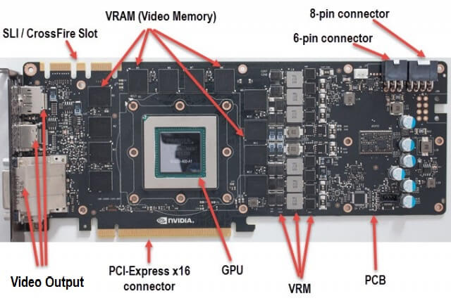

La GPU (Graphics Processing Unit) è composta da
numerosi componenti essenziali che lavorano insieme per gestire
il rendering grafico e il calcolo parallelo. I principali
componenti di una GPU includono:
-
Core di elaborazione (Shader Cores): Unità
di calcolo che gestiscono le operazioni matematiche per il
rendering delle immagini.
-
Memoria Video (VRAM): Memoria dedicata alla
gestione dei dati grafici come texture e modelli 3D.
-
Unità di Rasterizzazione: Converte le
immagini 3D in pixel per essere visualizzate sullo schermo.
-
Unità di Texture Mapping (TMU): Gestisce
l'applicazione delle texture sugli oggetti 3D.
-
Interfaccia di Memoria: Gestisce il flusso
di dati tra la GPU e la memoria VRAM.
Ogni componente della GPU ha un ruolo fondamentale nel processo
di rendering e nella gestione delle operazioni parallele, che
sono cruciali per il rendering di grafica complessa in tempo
reale.